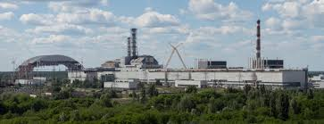
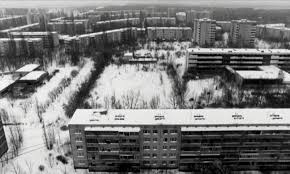
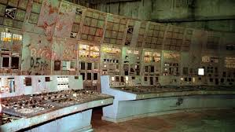
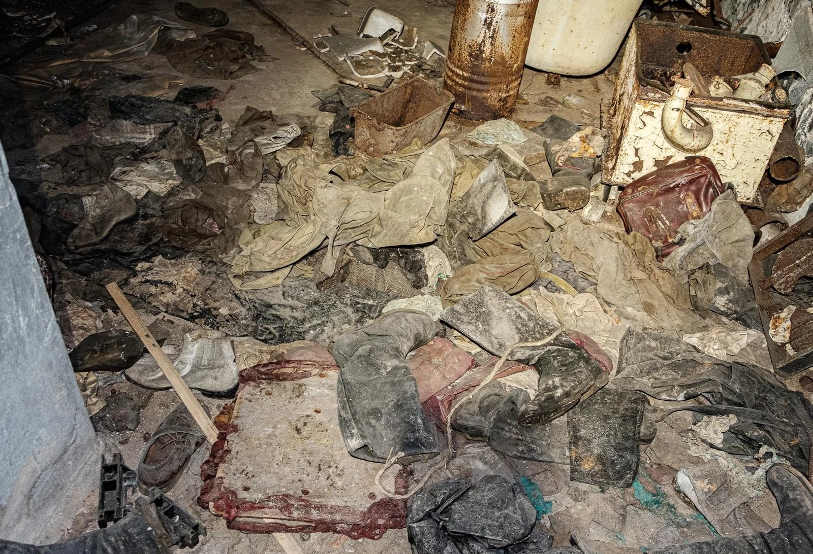
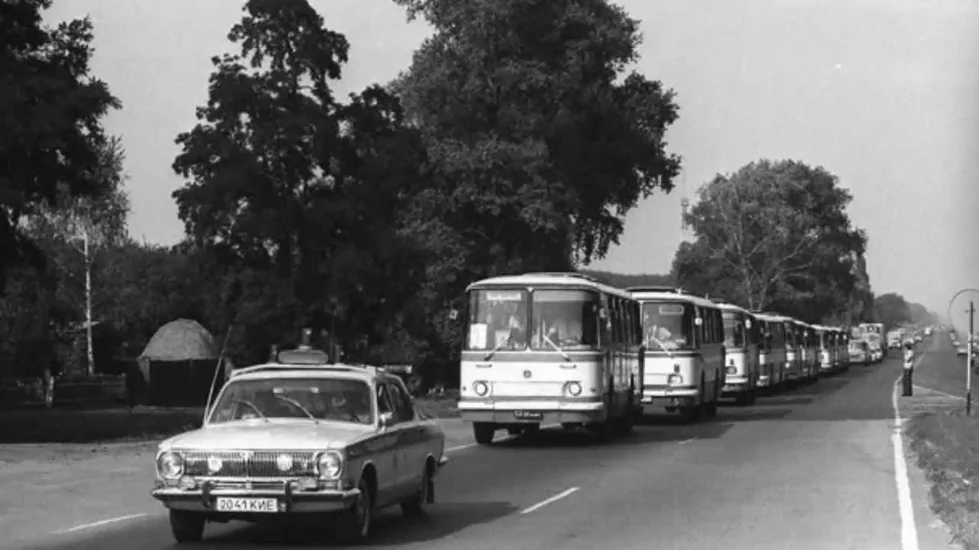
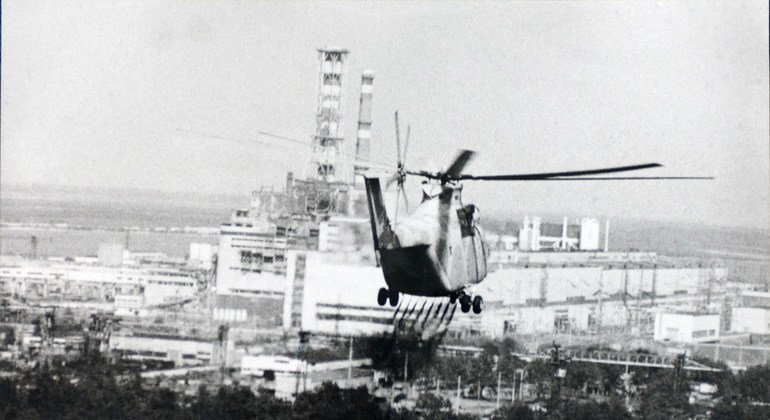
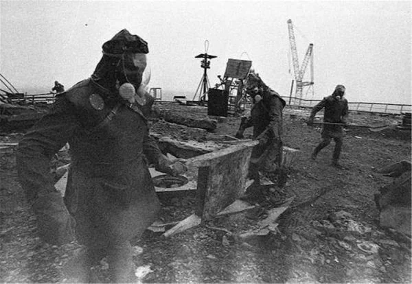
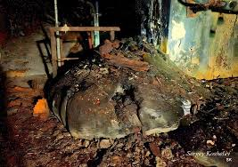
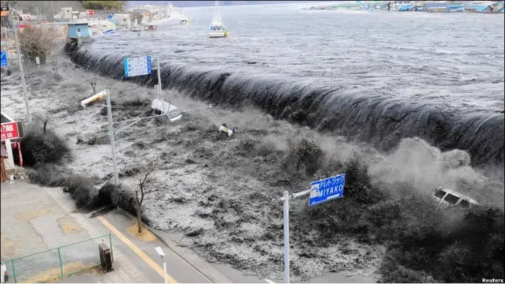

La crónica definitiva del mayor desastre nuclear de la historia. Secretos, heroísmo y el despertar del átomo.

Prípiat era la joya de la corona de la Unión Soviética, una "Atomgrad" (ciudad atómica) nacida en 1970 para albergar a las mentes más brillantes de la Central Nuclear V.I. Lenin. Pero bajo sus amplios bulevares y su propaganda de infalibilidad socialista, se estaba gestando una catástrofe dictada por la arrogancia humana, los recortes presupuestarios y el desprecio por las leyes de la física.
Para comprender la tragedia, debemos descender al núcleo del problema. Una central nuclear convencional funciona como una gigantesca máquina de vapor: los átomos de uranio se dividen (fisión), liberan un calor extremo, hierven agua para crear vapor, y ese vapor mueve turbinas que generan electricidad. Para que la fisión sea controlable, los neutrones libres deben frenarse usando un "moderador" (como el agua en occidente). Si un reactor occidental pierde agua, pierde su moderador y la reacción se apaga sola (coeficiente de vacío negativo).
Pero la URSS quería producir la mayor cantidad de electricidad y plutonio armamentístico al menor coste posible. Crearon el RBMK-1000. Este reactor usaba enormes bloques de grafito como moderador y agua ordinaria solo como refrigerante. Este diseño económico creó un defecto letal y clasificado por la KGB: el coeficiente de vacío positivo. Si el agua del RBMK hervía o se perdía, el grafito seguía moderando los neutrones. Sin el agua para absorber el exceso de neutrones, el vapor ("vacío") provocaba que la reacción se acelerara salvajemente. A baja potencia, el RBMK era inestable, impredecible y operarlo era caminar sobre el filo de una navaja.
El reactor estaba diseñado para operar con seguridad a una potencia térmica masiva de 3.200 megavatios (MWt), entregando 1.000 megavatios eléctricos a la red de Kiev. Nunca debía operarse por debajo de los 700 MWt, donde el monstruo se volvía inestable.

La catástrofe comenzó por una obsesión. La planta llevaba años intentando realizar una prueba de seguridad vital: en caso de apagón total, los generadores diésel de emergencia tardaban 60 segundos en arrancar. ¿Podría la turbina, al girar por simple inercia mientras se frenaba, dar electricidad a las bombas de refrigeración durante ese minuto crítico? La prueba, programada para el día 25, se retrasó por exigencias de Kiev. El reactor quedó funcionando a media potencia durante 10 horas.
Esta decisión provocó un efecto químico devastador: el envenenamiento por Xenón-135. El xenón es un subproducto de la fisión que "devora" neutrones. A máxima potencia, el xenón se quema y desaparece. Pero a media potencia, comenzó a acumularse como ceniza en un fuego, asfixiando el reactor.
En la madrugada del 26 de abril, el turno de noche, liderado por el operador de control Leonid Toptunov (de 25 años) y el jefe de turno Aleksandr Akimov, recibió la orden de bajar la potencia para la prueba. Debido al xenón, la potencia se desplomó drásticamente hasta los 30 MWt, prácticamente apagado. Según los manuales de seguridad, el reactor debía apagarse por completo durante 24 horas para disipar el xenón. Sin embargo, el ingeniero jefe adjunto Anatoly Dyatlov, un supervisor dictatorial, amenazó con despedirlos si no subían la potencia y terminaban la prueba esa misma noche.
Bajo coacción, los operarios violaron todos los protocolos de seguridad. Para combatir el efecto asfixiante del xenón, extrajeron de forma manual casi todas las barras de control (los frenos de boro del reactor). De las 211 barras disponibles, se requiere un mínimo absoluto de 15 insertadas en todo momento; Akimov y Toptunov operaban con apenas 6. El reactor quedó estabilizado a 200 MWt. Era una bomba de relojería sostenida solo por el freno de un gas volátil (el xenón) y el flujo constante de agua.
A las 01:23:04, la prueba dio comienzo. Se cerró el vapor a las turbinas, disminuyendo la electricidad de las bombas. El caudal de agua bajó. En segundos, el agua residual en el núcleo comenzó a hervir, creando burbujas de vapor.
El coeficiente de vacío positivo se desató con furia. Menos agua significaba menos neutrones absorbidos, lo que aceleró la reacción, generando más calor, lo que evaporó más agua. Un bucle infinito de retroalimentación térmica. Al ver que los medidores de potencia se disparaban, Akimov gritó y pulsó el botón AZ-5 (Scram), ordenando el apagado de emergencia total para reinsertar todas las barras de control de golpe.
Pero el RBMK tenía un defecto encubierto para ahorrar costes de fabricación que firmó la sentencia de muerte: las puntas de las barras de boro eran de grafito. Al descender, lo primero que entró en la base del núcleo no fue el boro (que frena la reacción), sino el grafito (que la acelera), desplazando además el último remanente de agua de refrigeración.
La potencia térmica, en cuestión de milisegundos, saltó de 200 a más de 33.000 megavatios. El intenso calor hizo añicos las pastillas de uranio. A las 01:23:44, una gigantesca explosión térmica (de vapor a presión extrema) destruyó el núcleo, bloqueando las barras a mitad de camino y levantando la cubierta biológica superior de 1.000 toneladas, apodada "Elena", lanzándola de costado. Segundos después, el oxígeno entró en el grafito supercalentado, provocando una segunda explosión de hidrógeno que voló el techo del edificio. Un haz de luz azul iridiscente (radiación de Cherenkov) iluminó la noche. El núcleo nuclear había sido expuesto, vomitando millones de partículas radiactivas al cielo abierto.

Los bomberos de Prípiat fueron los primeros en llegar, sin ser informados de que lidiaban con un incendio nuclear. Caminaron sobre bloques de grafito incandescente de las barras de combustible. Los bomberos relataron un intenso sabor a sangre, metal y plomo en la garganta. La radiación no quema con fuego; bombardea las células humanas a velocidad supersónica, destrozando el ADN.
Esa madrugada, el Hospital 126 se llenó de bomberos y operarios que vomitaban profusamente. Sus caras se tornaron rojizas ("bronceado nuclear"). Las enfermeras, sin equipo de protección, les despojaron de sus ropas radiactivas y las arrojaron al sótano, donde hasta el día de hoy, ese montón de tela de lona y cascos sigue emitiendo una radiación cientos de veces superior al fondo natural.
Lo peor del Síndrome de Irradiación Aguda (ARS) es su "fase latente". A los pocos días, los afectados parecieron recuperarse; bromeaban y caminaban. Pero era un engaño biológico. La radiación había matado a su médula ósea. Días después, en el Hospital Número 6 de Moscú, comenzó el infierno: sus glóbulos blancos desaparecieron, sus sistemas inmunológicos se apagaron, las membranas mucosas se desintegraron y la piel se ampolló, volviéndose negra y desprendiéndose del cuerpo. A medida que sus vasos sanguíneos colapsaban, ni siquiera podían administrarles morfina. Murieron en una agonía inimaginable, licuándose por dentro, y sus cuerpos eran tan letales que fueron enterrados en Moscú dentro de ataúdes de zinc sellados bajo una capa de hormigón.

Mientras los bomberos agonizaban, la postura oficial del director Bryukhanov y el ingeniero Fomin fue la negación sistemática. Reportaron a Moscú un incendio de techo con niveles de radiación de "3.6 roentgens", sencillamente porque ese era el límite máximo de los pequeños dosímetros portátiles que tenían a mano. La realidad rondaba los 15.000 roentgens por hora en el exterior del reactor (el equivalente a millones de radiografías de tórax por minuto).
Prípiat continuó su vida normal todo el sábado. Muchos ciudadanos, fascinados por el pilar de luz azul iridiscente y los helicópteros, se agolparon en un puente ferroviario. Observaron el incendio mientras una suave brisa dejaba caer ceniza radiactiva en su pelo y ropa. Se le conoce como el "Puente de la Muerte", pues se estima que nadie de los que estuvo allí esa noche sobrevivió a las enfermedades consecuentes.
Solo 36 horas después, cuando científicos como Valery Legasov llegaron y midieron el horror real, se ordenó la evacuación. 1.200 autobuses sacaron a 50.000 personas de Prípiat en apenas 3 horas, diciéndoles que volverían en tres días para evitar el pánico. Al mundo exterior, la URSS le guardó silencio total, hasta que dos días después, las alarmas de radiación saltaron en la central nuclear de Forsmark, ¡en Suecia!, obligando a Moscú a confesar el "accidente".

Lo que quedaba del reactor ardía de forma incontrolable, fundiendo el combustible, la arena y el acero en una lava nuclear llamada "Corium". Si este corium derretía los cimientos y llegaba a las enormes piscinas de agua del sótano, el choque térmico provocaría una explosión de entre 3 y 5 megatones. Las otras tres unidades nucleares habrían volado por los aires, la nube radiactiva habría aniquilado la vida en Kiev, contaminando los suministros de agua dulce de 30 millones de personas e incapacitando el norte de Europa por siglos.
Para evitarlo, la respuesta humana fue titánica e inolvidable:

El techo del colindante Reactor 3 quedó cubierto de grafito altamente irradiado. La URSS compró avanzados robots a Japón y Alemania Occidental (el "Joker"), pero la extrema radiación gamma frió sus microchips en horas. Sin máquinas, se usó sangre: nacieron los Liquidadores ("Biorobots").

Miles de jóvenes soldados fueron vestidos con delantales de plomo improvisados y enviados al techo de la muerte (apodado "Masha"). La radiación era tan letal (hasta 12.000 roentgens) que solo podían estar expuestos durante 90 segundos exactos. Salían corriendo, daban tres paladas de escombros hacia el cráter, y volvían a entrar, firmando con ello una drástica reducción de su esperanza de vida. Se calcula que hubo alrededor de 600.000 liquidadores trabajando en toda la zona en los años posteriores, limpiando calles, matando mascotas irradiadas y raspando tierra vegetal. Decenas de miles morirían años después o vivirían con leucemia, cáncer y enfermedades crónicas, con cifras reales ocultas tras los informes soviéticos que estancaron los muertos directos oficiales en 31 personas.
En noviembre de 1986, lograron envolver los restos en el "Sarcófago", una inmensa tumba de hormigón y acero que encerraba a la bestia. En sus entrañas, en los sótanos derretidos, yace hoy la "Pata de Elefante", una estalagmita de corium macizo que, en los primeros meses, emitía suficiente radiación para garantizar una muerte atroz a cualquiera que la mirara durante más de cinco minutos.

Tras el desastre, el director Bryukhanov, Fomin y el ingeniero jefe Dyatlov fueron sentenciados a 10 años de campos de trabajo en un juicio teatro que eludió los defectos del reactor. El verdadero héroe intelectual, el científico Valery Legasov, documentó minuciosamente los fallos del RBMK en Viena, lo que le valió el ostracismo de la KGB. Marginado, asolado por la enfermedad por radiación y el dolor de los operarios muertos, Legasov se ahorcó el 26 de abril de 1988, exactamente a los dos años del accidente. Dejó tras de sí cintas de audio innegables que obligaron a la URSS a modificar por fin los demás reactores RBMK para evitar otro cataclismo.
Hoy en día, la Zona de Exclusión (CEZ) abarca 30 kilómetros a la redonda controlados por el Estado Ucraniano. La vida humana permanente está prohibida, pero, ante la ausencia del hombre, la naturaleza ha retomado el control de forma agresiva. Lobos, osos y caballos de Przewalski dominan las calles llenas de vegetación. Sorprendentemente, pese a tener mutaciones menores en flora y cataratas en fauna, los animales prosperan. En 2016 se instaló sobre el reactor el Nuevo Confinamiento Seguro (NSC), una estructura masiva en forma de arco, la mayor jamás movida por la humanidad, diseñada para asegurar los restos radiactivos al menos durante cien años, mientras se investiga cómo desmantelar el núcleo letal que aún late debajo.
Resulta irónico, y muestra de las necesidades humanas, que los reactores 1, 2 y 3 de Chernóbil continuaran generando electricidad. Sus valientes ingenieros cruzaron la zona radiactiva cada día para trabajar, cerrando el último de ellos definitivamente en el año 2000.
La Escala INES (Escala Internacional de Sucesos Nucleares) solo tiene siete niveles. Solo dos eventos en la historia humana la han coronado: Chernóbil en 1986 y Fukushima Daiichi (Japón) en 2011. Analizar ambos es imperativo para comprender por qué la radiación no fue el arma homicida de 1986; el arma fue la mentira y el desprecio ético.

La energía nuclear es, por naturaleza técnica, la fuente de energía base más limpia y segura inventada por el hombre; sin emisiones de carbono que alteren el clima, ha demostrado ser estadísticamente infinitamente menos letal que un siglo respirando la polución del carbón o el petróleo. Pero es una energía que no admite mediocridad. Exige un protocolo de acero, una seguridad pasiva imperturbable y una transparencia institucional absoluta. No perdona los recortes, la soberbia, ni la opacidad.
Chernóbil no es un testimonio del peligro de la ciencia, sino de la brutalidad de la mentira política. Realizar la expedición a Prípiat y pisar los confines del Sarcófago con CE Explorer no es un mero acto de exploración turística. Es enfrentarse cara a cara con la historia materializada; un monumento y memorial a aquellos cientos de miles de trabajadores anónimos que bajaron a los infiernos para limpiar con sus propias manos la negligencia del Estado y evitar que Europa dejara de existir.